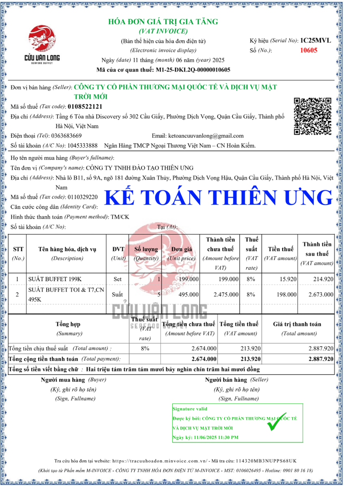
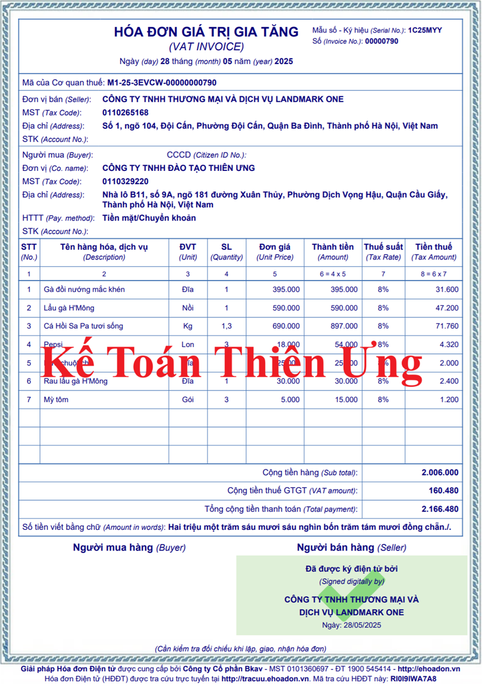
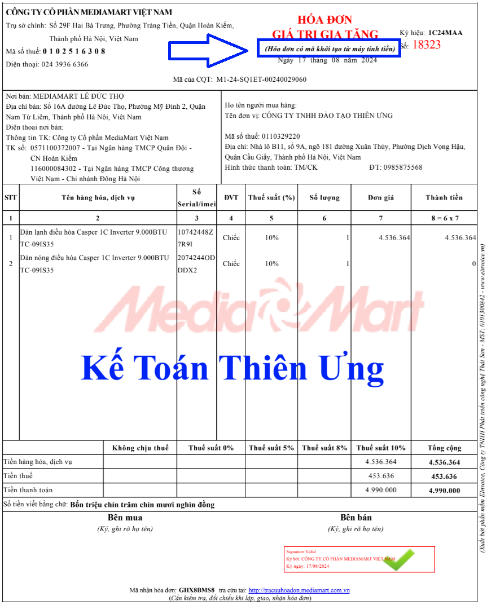
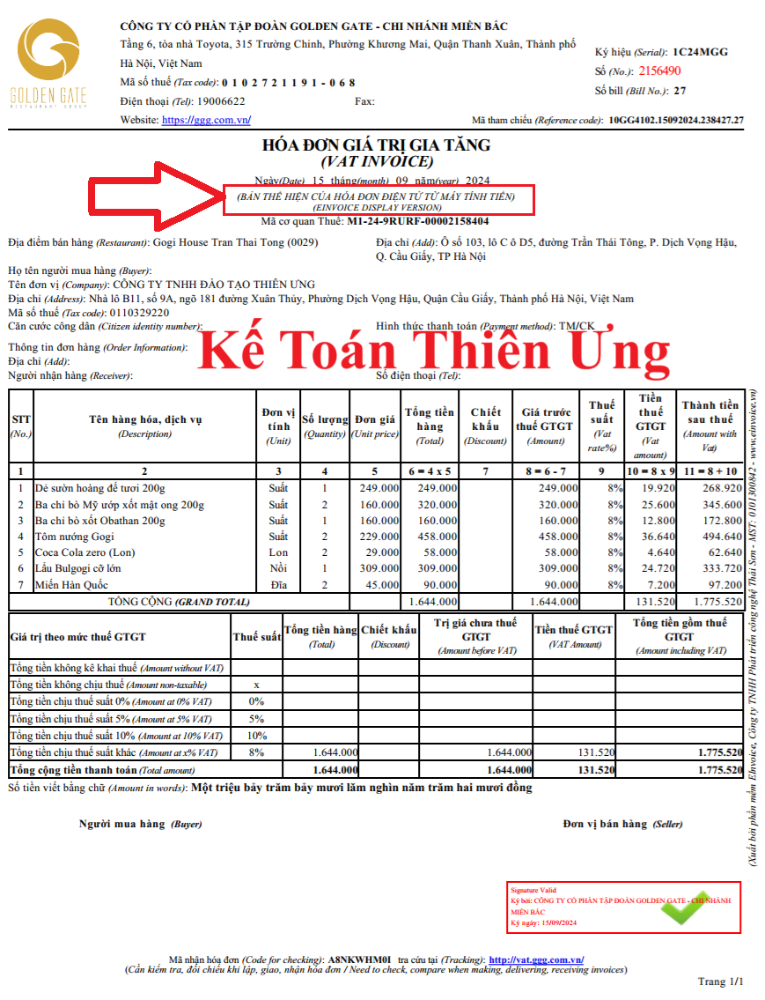

Hóa đơn điện tử là hóa đơn có mã hoặc không có mã của cơ quan thuế được thể hiện ở dạng dữ liệu điện tử do tổ chức, cá nhân bán hàng hóa, cung cấp dịch vụ lập bằng phương tiện điện tử để ghi nhận thông tin bán hàng hóa, cung cấp dịch vụ theo quy định của pháp luật về kế toán, pháp luật về thuế, bao gồm cả trường hợp hóa đơn được khởi tạo từ máy tính tiền có kết nối chuyển dữ liệu điện tử với cơ quan thuế.
Theo Điểm a Khoản 2 Điều 1 Nghị định 70/2025/NĐ-CP có hiệu lực từ ngày 01/06/2025 Bổ sung điểm c, điểm d vào khoản 2 của Nghị định số 123/2020/NĐ-CP thì:
Hóa đơn điện tử khởi tạo từ máy tính tiền có kết nối chuyển dữ liệu điện tử với cơ quan thuế (sau đây gọi là hóa đơn điện tử khởi tạo từ máy tính tiền) là hóa đơn có mã của cơ quan thuế hoặc dữ liệu điện tử để người mua có thể truy xuất, kê khai thông tin hóa đơn điện tử khởi tạo từ máy tính tiền do tổ chức, cá nhân bán hàng hóa, cung cấp dịch vụ lập từ hệ thống tính tiền, dữ liệu được chuyển đến cơ quan thuế theo định dạng được quy định tại Điều 12 Nghị định này.
d) Máy tính tiền là hệ thống tính tiền bao gồm một thiết bị điện tử đồng bộ hoặc một hệ thống gồm nhiều thiết bị điện tử được kết hợp với nhau bằng giải pháp công nghệ thông tin có chức năng chung như: tính tiền, lưu trữ các giao dịch bán hàng, số liệu bán hàng.
1. Cách nhận biết hóa đơn điện tử được khởi tạo từ máy tính tiền
Theo điều 5 cuả Thông tư 32/2025/TT-BTC hướng dẫn thực hiện một số điều của Luật Quản lý thuế 2019, Nghị định 123/2020/NĐ-CP quy định về hóa đơn, chứng từ, Nghị định 70/2025/NĐ-CP thì:
Điều 5. Ký hiệu mẫu số, ký hiệu hóa đơn, tên liên hóa đơn
1. Hóa đơn điện tử
b) Ký hiệu hóa đơn điện tử là nhóm 6 ký tự gồm cả chữ viết và chữ số thể hiện ký hiệu hóa đơn điện tử để phản ánh các thông tin về loại hóa đơn điện tử có mã của cơ quan thuế hoặc hóa đơn điện tử không có mã, năm lập hóa đơn, loại hóa đơn điện tử được sử dụng. Sáu (06) ký tự này được quy định như sau:
- Ký tự đầu tiên là một (01) chữ cái được quy định là C hoặc K như sau: C thể hiện hóa đơn điện tử có mã của cơ quan thuế, K thể hiện hóa đơn điện tử không có mã;
- Hai ký tự tiếp theo là hai (02) chữ số Ả rập thể hiện năm lập hóa đơn điện tử được xác định theo 2 chữ số cuối của năm dương lịch. Ví dụ: Năm lập hóa đơn điện tử là năm 2025 thì thể hiện là số 25; năm lập hóa đơn điện tử là năm 2026 thì thể hiện là số 26;
- Một ký tự tiếp theo là một (01) chữ cái được quy định là T, D, L, M, N, B, G, H, X thể hiện loại hóa đơn điện tử được sử dụng, cụ thể:
+ Chữ M: Áp dụng đối với hóa đơn điện tử được khởi tạo từ máy tính tiền;
Các bạn nhìn vào ký hiệu của hóa đơn: Nếu Trong "Ký hiệu hóa đơn điện tử", đằng sau số năm là chữ M thì đó là đơn điện tử được khởi tạo từ máy tính tiền
Thì chữ M này thể hiện: đây là hóa đơn điện tử được khởi tạo từ máy tính tiền
2. Mẫu hóa đơn điện tử được khởi tạo từ máy tính tiền




Ngày 20/3/2025, Chính phủ ban hành Nghị định số 70/2025/NĐ-CP sửa đổi, bổ sung một số điều của Nghị định số 123/2020/NĐ-CP về hóa đơn, chứng từ. Theo đó, việc quản lý hóa đơn, chứng từ điện tử sẽ được áp dụng theo quy trình mới nhằm giảm thiểu rủi ro, nâng cao hiệu quả giám sát hóa đơn, đặc biệt là hóa đơn có mã của cơ quan thuế khởi tạo từ máy tính tiền (MTT) – một trong những hình thức đang được triển khai rộng trong lĩnh vực bán lẻ, ăn uống, dịch vụ.
Chi tiết, Công ty đào tạo Kế Toán Diệu Tâm mời các bạn xem tại đây:
Hóa đơn điện tử khởi tạo từ máy tính tiền theo Nghị định 70 2025
Công ty đào tạo Kế Toán Diệu Tâm mời các bạn tham khảo thêm một vài các quy định liên quan đến hóa đơn điện tử được khởi tạo từ máy tính tiền mà bạn có thể muốn biết như sau:
Theo Khoản 8 Điều 1 Nghị định 70/2025/NĐ-CP có hiệu lực từ ngày 01/06/2025
8. Sửa đổi tên Điều 11 và sửa đổi, bổ sung Điều 11 như sau:
“Điều 11. Hóa đơn điện tử khởi tạo từ máy tính tiền
1. Hộ kinh doanh, cá nhân kinh doanh theo quy định tại khoản 1 Điều 51 có mức doanh thu hằng năm từ 01 tỷ đồng trở lên, khoản 2 Điều 90, khoản 3 Điều 91 Luật Quản lý thuế số 38/2019/QH14 và doanh nghiệp có hoạt động bán hàng hóa, cung cấp dịch vụ, trong đó có bán hàng hóa, cung cấp dịch vụ trực tiếp đến người tiêu dùng (trung tâm thương mại; siêu thị; bán lẻ (trừ ô tô, mô tô, xe máy và xe có động cơ khác); ăn uống; nhà hàng; khách sạn; dịch vụ vận tải hành khách, dịch vụ hỗ trợ trực tiếp cho vận tải đường bộ, dịch vụ nghệ thuật, vui chơi, giải trí, hoạt động chiếu phim, dịch vụ phục vụ cá nhân khác theo quy định về Hệ thống ngành kinh tế Việt Nam) sử dụng hóa đơn điện tử khởi tạo từ máy tính tiền kết nối chuyển dữ liệu điện tử với cơ quan thuế.
2. Hóa đơn điện tử khởi tạo từ máy tính tiền kết nối chuyển dữ liệu điện tử với cơ quan thuế đảm bảo nguyên tắc sau:
a) Nhận biết được hóa đơn in từ máy tính tiền kết nối chuyển dữ liệu điện tử với cơ quan thuế;
b) Không bắt buộc có chữ ký số;
c) Khoản chi mua hàng hóa, dịch vụ sử dụng hóa đơn (hoặc sao chụp hóa đơn hoặc tra thông tin từ Cổng thông tin điện tử của Tổng cục Thuế về hóa đơn) được khởi tạo từ máy tính tiền được xác định là khoản chi có đủ hóa đơn, chứng từ hợp pháp khi xác định nghĩa vụ thuế.
3. Hóa đơn điện tử khởi tạo từ máy tính tiền có các nội dung sau đây:
a) Tên, địa chỉ, mã số thuế người bán;
b) Tên, địa chỉ, mã số thuế/số định danh cá nhân/số điện thoại của người mua theo quy định (nếu người mua yêu cầu);
c) Tên hàng hóa, dịch vụ, đơn giá, số lượng, giá thanh toán. Trường hợp tổ chức, doanh nghiệp nộp thuế theo phương pháp khấu trừ phải ghi rõ nội dung giá bán chưa thuế giá trị gia tăng, thuế suất thuế giá trị gia tăng, tiền thuế giá trị gia tăng, tổng tiền thanh toán có thuế giá trị gia tăng;
d) Thời điểm lập hóa đơn;
đ) Mã của cơ quan thuế hoặc dữ liệu điện tử để người mua có thể truy xuất, kê khai thông tin hóa đơn điện tử khởi tạo từ máy tính tiền.
Người bán gửi hoá đơn điện tử cho người mua bằng hình thức điện tử (tin nhắn, thư điện tử và các hình thức khác) hoặc cung cấp đường dẫn hoặc mã QR để người mua tra cứu, tải hoá đơn điện tử.